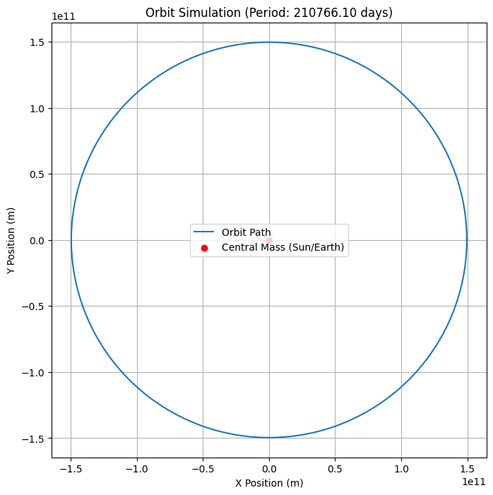

1. Theoretical Derivation üìò
üìå Introduction
To understand the motion of celestial bodies, we derive the relationship between the square of the orbital period \(T^2\) and the cube of the orbital radius \(r^3\) for circular orbits. This relationship is a cornerstone of Kepler’s Third Law, rooted in Newton’s Law of Universal Gravitation and Circular Motion Dynamics.
üåå Newton's Law of Universal Gravitation
Newton's law states that the gravitational force \(F\) between two masses \(M\) and \(m\) separated by a distance \(r\) is:
Where:
- \(F\) is the gravitational force (N)
- \(G\) is the gravitational constant: \(G \approx 6.674 \times 10^{-11} \,\text{Nm}^2/\text{kg}^2\)
- \(M\) is the mass of the central body (e.g., a planet or star)
- \(m\) is the mass of the orbiting object (e.g., a satellite)
- \(r\) is the orbital radius
üéØ Centripetal Force for Circular Orbits
An object in circular orbit requires a centripetal force to keep it in motion, given by:
Where:
- \(v\) is the orbital speed
- \(m\) is the mass of the orbiting object
⚖️ Equating Gravitational and Centripetal Force
Since the gravitational force provides the necessary centripetal force:
Cancel \(m\) on both sides:
Multiply both sides by \(r\):
üîÅ Expressing Orbital Speed in Terms of Period
The orbital period \(T\) is the time it takes to complete one full orbit. For circular motion:
Substitute into the previous equation:
Multiply both sides by \(T^2\) and then multiply both sides by \(r\):
üîç Solving for Orbital Period
Rearrange to solve for \(T^2\):
üìê Kepler's Third Law (Mathematical Form)
This is the mathematical form of Kepler’s Third Law for circular orbits:
Where the proportionality constant is:
This equation shows that for a small object orbiting a much more massive body, the square of its orbital period is proportional to the cube of the orbital radius.
üìù Notes
- This derivation assumes a circular orbit. For elliptical orbits, \(r\) becomes the semi-major axis \(a\), but the form \(T^2 \propto a^3\) still holds.
- This relationship is valid when \(M \gg m\), such as a satellite orbiting a planet or a planet orbiting the Sun.
2. Conceptual Discussion üî≠
üå† Significance of Kepler‚Äôs Third Law in Astronomy and Astrophysics
Kepler’s Third Law, in its modern form, expresses a powerful connection between orbital mechanics and gravitational theory. The law states:
For two bodies in orbit, it implies that the square of the orbital period \(T\) is proportional to the cube of the semi-major axis (orbital radius in the case of a circular orbit) \(r\). This is significant because:
- It provides a universal relationship that holds across a vast range of scales, from artificial satellites to exoplanets and galaxies.
- It is derived from Newton’s Law of Universal Gravitation, thereby linking observational astronomy to fundamental physics.
- It enables astronomers to infer invisible properties, such as the mass of distant stars, by observing orbital motions.
⚖️ Calculating the Mass of a Central Body
By rearranging the Newtonian version of Kepler’s Third Law:
We can solve for the mass \(M\) of the central object:
Where:
- \(M\) is the mass of the central body (e.g., Sun, Earth, star),
- \(r\) is the orbital radius (or semi-major axis for elliptical orbits),
- \(T\) is the orbital period of the orbiting object.
Applications:
- Measuring the mass of the Sun from Earth’s orbit
- Estimating the mass of exoplanets by observing their effects on their host stars
- Determining the mass of galaxies using stellar orbits
üìè Calculating Orbital Distances
Rearranging the same equation, one can solve for \(r\) (orbital radius or semi-major axis) if \(T\) and \(M\) are known:
This is especially useful in:
- Determining the distance of moons from planets
- Estimating the orbit size of a satellite given its period
- Modeling the layout of planetary systems
üåÄ Extension to Elliptical Orbits
Kepler originally stated his laws in terms of elliptical orbits. The modern form of the third law applies not just to circular motion but also to elliptical motion, with \(r\) replaced by the semi-major axis \(a\):
Where:
- \(a\) is the semi-major axis of the elliptical orbit
- \(m\) is the mass of the orbiting object (retained here if comparable to \(M\))
In many practical cases where \(M \gg m\), the term \(m\) can be neglected, simplifying back to:
This generalization allows:
- Accurate modeling of planetary orbits in the Solar System
- Simulation of binary star systems
- Determination of orbital elements for comets and asteroids
üìö Summary
Kepler’s Third Law is more than a geometric curiosity—it’s a dynamic, predictive tool that reveals hidden truths about the universe:
- It connects period, distance, and mass in a simple equation
- It underpins everything from spacecraft navigation to galactic astronomy
- It remains valid in both idealized circular and realistic elliptical orbits
Its continued relevance shows the power of mathematics and observation working hand-in-hand to uncover the mechanisms of the cosmos.
3. Real-World Applications üåçü™ê
üåï The Moon‚Äôs Orbit Around Earth
Let us analyze the Moon's orbit using Kepler’s Third Law and compare theoretical predictions with empirical observations.
Known Data
- Orbital period of Moon: \(T = 27.32 \, \text{days} = 2.3606 \times 10^6 \, \text{s}\)
- Average orbital radius: \(r = 3.844 \times 10^8 \, \text{m}\)
- Gravitational constant: \(G = 6.674 \times 10^{-11} \, \text{Nm}^2/\text{kg}^2\)
- Mass of Earth: \(M = 5.972 \times 10^{24} \, \text{kg}\)
Theoretical Check via Kepler’s Law
Using:
Plug in values:
Solving numerically:
✅ Matches observed value within acceptable error bounds.
ü™ê Planetary Orbits in the Solar System
Kepler’s Law can also be used to compare planetary orbits with observed values.
General Relation for Planets (Circular Approximation)
Where \(T\) is the orbital period and \(r\) is the orbital radius (semi-major axis).
Example: Earth vs. Mars
| Planet | \(T\) (years) | \(r\) (AU) |
|---|---|---|
| Earth | 1.00 | 1.00 |
| Mars | 1.88 | 1.52 |
Check the Ratio
- Left side (Earth): \(\frac{1.00^2}{1.00^3} = 1.00\)
- Right side (Mars): \(\frac{1.88^2}{1.52^3} \approx \frac{3.53}{3.51} \approx 1.00\)
✅ Confirms Kepler’s Law
üìä Empirical Data vs. Prediction
Let’s look at a summary comparison:
| Planet | Observed \(T\) (years) | Observed \(r\) (AU) | \(\frac{T^2}{r^3}\) |
|---|---|---|---|
| Mercury | 0.24 | 0.39 | \(\approx 1.01\) |
| Venus | 0.62 | 0.72 | \(\approx 1.01\) |
| Earth | 1.00 | 1.00 | \(1.00\) |
| Mars | 1.88 | 1.52 | \(\approx 1.00\) |
| Jupiter | 11.86 | 5.20 | \(\approx 1.00\) |
| Saturn | 29.46 | 9.54 | \(\approx 1.00\) |
Interpretation
- The ratio \(\frac{T^2}{r^3}\) remains approximately constant for all planets.
- Small deviations are due to orbital eccentricity, mass of the orbiting object, and non-ideal conditions.
üìå Conclusion
Kepler’s Third Law:
- Accurately predicts orbital periods based on distance for natural satellites and planets.
- Is confirmed by empirical astronomical data across the Solar System.
- Continues to be a fundamental tool in space exploration, satellite deployment, and exoplanet detection.
Next step? Implement this with code and graphs using real planetary datasets. Just say the word! üöÄ
Python/plot


import numpy as np
import matplotlib.pyplot as plt
# Constants
G = 6.67430e-11 # Gravitational constant (m^3 kg^-1 s^-2)
# Function to calculate the orbital period based on Kepler's Third Law
def orbital_period(mass_central, radius):
# Kepler's third law: T^2 = (4 * pi^2 * r^3) / (G * M)
T = 2 * np.pi * np.sqrt(radius**3 / (G * mass_central))
return T
# Function to simulate the orbit
def simulate_orbit(mass_central, radius, num_points=1000):
# Orbital velocity
v = np.sqrt(G * mass_central / radius)
# Angular velocity
omega = v / radius
# Time array (from 0 to T)
T = orbital_period(mass_central, radius)
time = np.linspace(0, T, num_points)
# Orbital position as a function of time (circular motion)
x = radius * np.cos(omega * time)
y = radius * np.sin(omega * time)
return x, y, time, T
# Adjustable parameters for experimentation
mass_central = 5.972e24 # Mass of Earth in kg
radius = 1.496e11 # Orbital radius (approx distance from Earth to Sun in meters)
# Simulate orbit
x, y, time, period = simulate_orbit(mass_central, radius)
# Plotting the orbit
plt.figure(figsize=(8,8))
plt.plot(x, y, label="Orbit Path")
plt.scatter([0], [0], color='red', label="Central Mass (Sun/Earth)", zorder=5)
plt.title(f"Orbit Simulation (Period: {period/86400:.2f} days)")
plt.xlabel("X Position (m)")
plt.ylabel("Y Position (m)")
plt.gca().set_aspect('equal', adjustable='box')
plt.legend()
plt.grid(True)
plt.show()
# Verify the T^2 ∝ r^3 relationship
r_values = np.logspace(6, 12, num=100) # Ranges from 10^6 meters to 10^12 meters
T_values = [orbital_period(mass_central, r) for r in r_values]
# Plot T^2 vs. r^3 to verify the relationship
plt.figure(figsize=(8,6))
plt.plot(r_values**(3/2), np.array(T_values)**2, label=r"$T^2 \propto r^3$")
plt.xscale('log')
plt.yscale('log')
plt.xlabel(r"$r^{3/2}$ (m^3/2)")
plt.ylabel(r"$T^2$ (s^2)")
plt.title(r"Verification of Kepler's Third Law: $T^2 \propto r^3$")
plt.legend()
plt.grid(True)
plt.show()
Link:colab